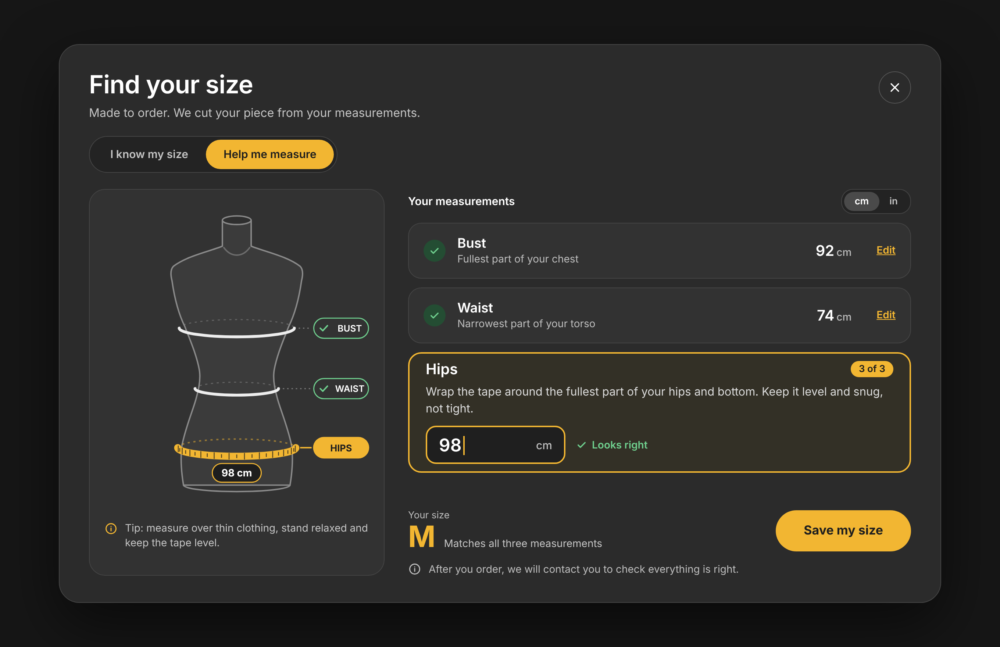
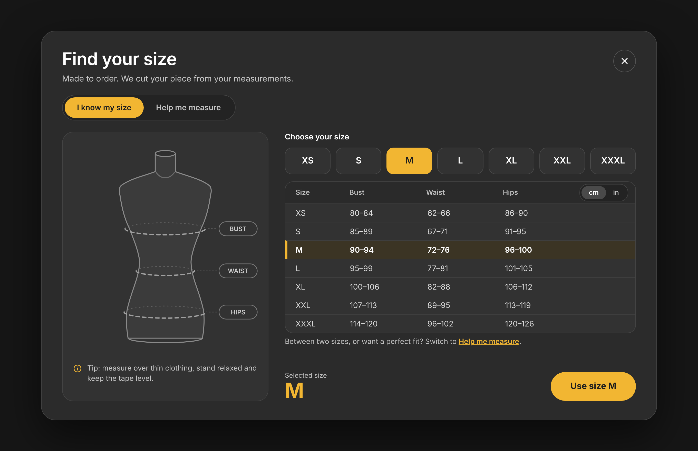
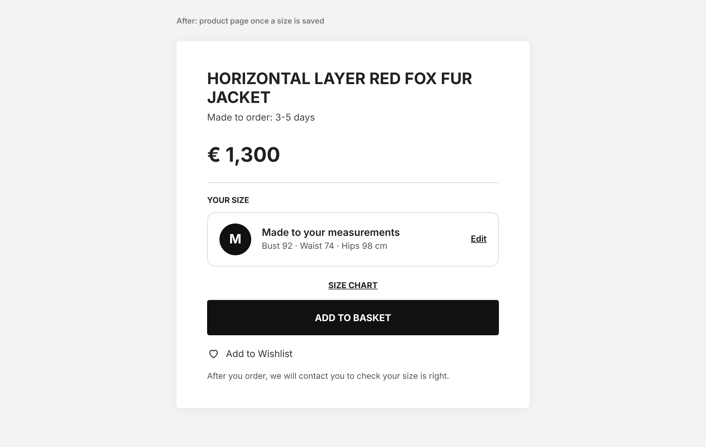
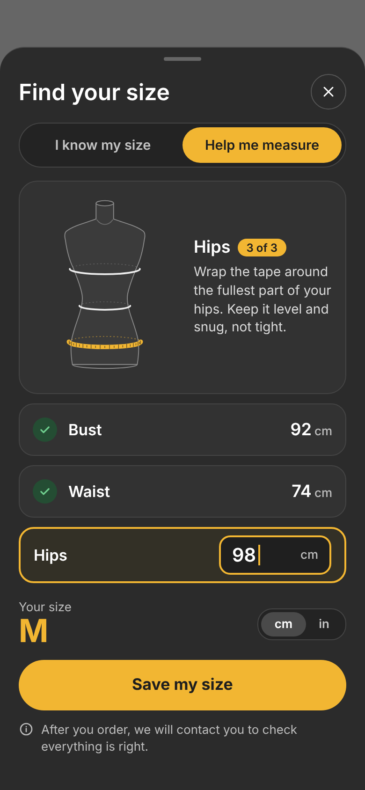

I redesigned the size guide pop-up for [Client name], a made-to-order fur store, so customers can choose or measure their size with confidence.

Problem. The old size guide mixed photos of models with a table, so shoppers could not tell which size to pick for a piece made to their measurements.
What I did. One clear first question, a size chart with cm and inches, and a guided measuring flow with a highlighted illustration. The chosen size then shows on the product page.
Result. [One honest sentence: what shipped, what you measured, or “concept, not yet tested”]
The pop-up opens with a single choice: I know my size or Help me measure. Shoppers who know their size go straight to the chart. Everyone else is guided.

Once a size is saved, the product page shows a “Your size” card with the measurements and an Edit link.


On mobile the pop-up becomes a bottom sheet, so the input and Save button stay on screen.